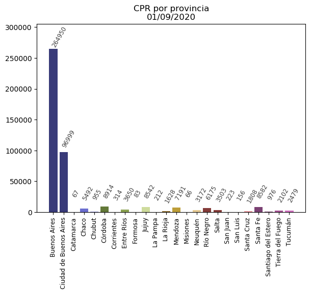
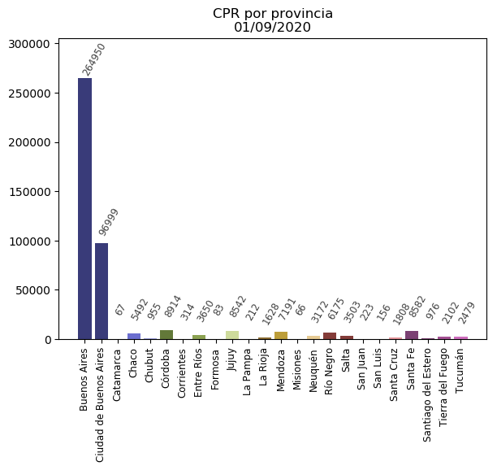

Visualizacion de los datos a desde un pie chart
Volver Visualizacion de los datos a desde un pie chart
Volver Para estimar la cantidad de habitantes de cada provincia use los datos poblacionales obtenidos de la wiki.
Como los censos se realizan cada 10 años en Argentina, y los años para los cuales tenemos informacion son 2001 y 2010, y teniendo en cuenta tambien
que la dinamica poblacional es creciente en toda america latina, lo que hice fue una funcion para estimar los valores de habitantes para el año 2020.
Si usamos la ecuacion de la recta que une dos puntos en R^2
donde x es el parametro de entrada de la funcion (x = 2020)
Por ejemplo, para La ciudad autonoma de Buenos Aires, definimos:
Pythyon
def p_creciente_CABA(x):
x = float(x)
y = ((x - 2001)/(2010 - 2001))*(2890151 - 2776138) + 2776138
return (float("{}".format(float(y))))